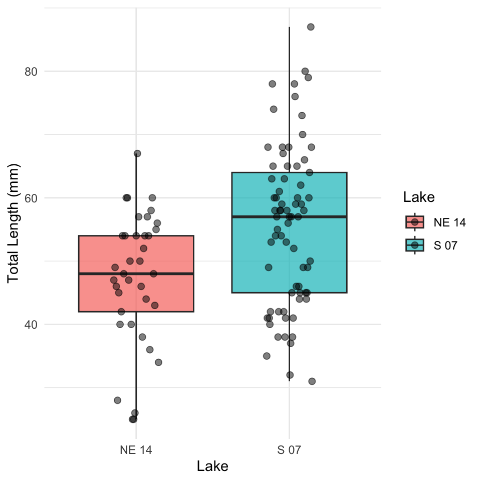
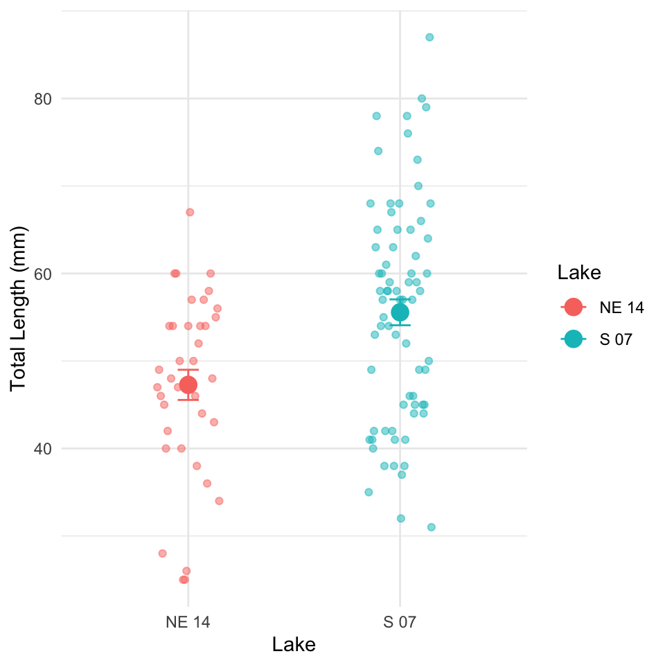
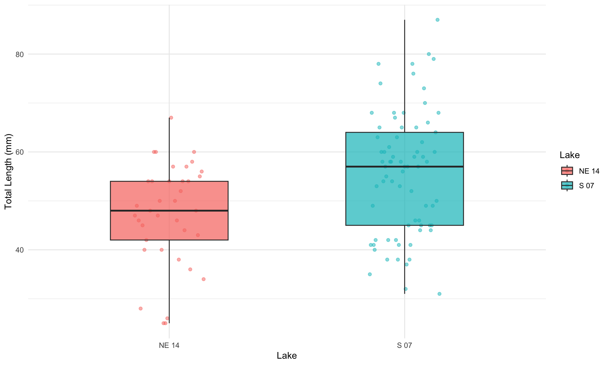

Introduction to Mann-Whitney U Test or (Wilcoxon Rank-Sum Test)
Background and Theory
The Mann-Whitney-Wilcoxon test (also known as the Wilcoxon rank-sum test or Mann-Whitney U test) is a powerful non-parametric alternative to the two-sample t-test. This test is particularly useful when:
The data do not follow a normal distribution
The sample sizes are small
Data are measured on an ordinal scale
Outliers are present
Unlike the t-test, which compares means, the Mann-Whitney-Wilcoxon test compares the distributions of two independent groups. Specifically, it tests whether one distribution is stochastically greater than the other.
The null and alternative hypotheses are:
\[H_0: \text{The distributions of both groups are identical}\]\[H_A: \text{The distributions of the two groups differ in location (median)}\]
How the Mann-Whitney-Wilcoxon Test Works
The test follows these steps:
Combine all observations from both groups and rank them from lowest to highest.
Calculate the sum of ranks for each group.
Calculate the U statistic, which represents the number of times observations in one group precede observations in the other group.
Compare the calculated U statistic to the critical value from the Mann-Whitney-Wilcoxon distribution, or calculate a p-value for larger samples.
The U statistic is calculated as:
\[U_1 = R_1 - \frac{n_1(n_1 + 1)}{2}\]
Where:
\(R_1\) is the sum of ranks in group 1
\(n_1\) is the sample size of group 1
If U is sufficiently small or large compared to what would be expected by chance, we reject the null hypothesis.
Data Analysis
Loading Libraries and Data
# Load required librarieslibrary(tidyverse)
── Attaching core tidyverse packages ──────────────────────── tidyverse 2.0.0 ──
✔ dplyr 1.2.1 ✔ readr 2.2.0
✔ forcats 1.0.1 ✔ stringr 1.6.0
✔ ggplot2 4.0.3 ✔ tibble 3.3.1
✔ lubridate 1.9.5 ✔ tidyr 1.3.2
✔ purrr 1.2.2
── Conflicts ────────────────────────────────────────── tidyverse_conflicts() ──
✖ dplyr::filter() masks stats::filter()
✖ dplyr::lag() masks stats::lag()
ℹ Use the conflicted package (<http://conflicted.r-lib.org/>) to force all conflicts to become errors
library(car) # For Levene's test
Loading required package: carData
Attaching package: 'car'
The following object is masked from 'package:dplyr':
recode
The following object is masked from 'package:purrr':
some
# library(ggpubr) # For adding p-values to plotslibrary(coin) # For permutation tests
Loading required package: survival
library(skimr)library(rcompanion) # For plotNormalHistogram
# Load the datasculpin_df <-read_csv("data/t_test_sculpin_s07_ne14.csv")
Rows: 110 Columns: 5
── Column specification ────────────────────────────────────────────────────────
Delimiter: ","
chr (2): lake, species
dbl (3): site, length_mm, mass_g
ℹ Use `spec()` to retrieve the full column specification for this data.
ℹ Specify the column types or set `show_col_types = FALSE` to quiet this message.
# Preview the datahead(sculpin_df)
# A tibble: 6 × 5
site lake species length_mm mass_g
<dbl> <chr> <chr> <dbl> <dbl>
1 109 NE 14 slimy sculpin 47 0.7
2 109 NE 14 slimy sculpin 49 0.9
3 109 NE 14 slimy sculpin 46 0.7
4 109 NE 14 slimy sculpin 28 0.15
5 109 NE 14 slimy sculpin 45 0.65
6 109 NE 14 slimy sculpin 40 0.3
Let’s visualize our data to better understand the distributions and differences between the two lakes:
Box Plot with Individual Data Points
# Create boxplot with individual pointsggplot(sculpin_df, aes(x = lake, y = length_mm, fill = lake)) +geom_boxplot(alpha =0.7, outlier.shape =NA) +geom_point(position =position_dodge2(width =0.3), alpha =0.5, size =2) +labs(x ="Lake",y ="Total Length (mm)",fill ="Lake" ) +theme_minimal() +theme(plot.title =element_text(hjust =0.5, face ="bold"),legend.position ="right" )

The boxplot shows the distribution of total lengths for each lake. The box represents the interquartile range (IQR, from the 25th to 75th percentile), with the horizontal line inside the box indicating the median. The individual points show the actual measurements, helping us visualize the full distribution of the data.
Mean and SE Individual Data Points
sculpin_df %>%ggplot( aes(x = lake, y = length_mm, color = lake)) +# Add individual data points in the backgroundgeom_point(position =position_dodge2(width =0.3), alpha =0.5, size =1.5) +# Add mean and standard errorstat_summary(fun = mean, geom ="point", size =4) +stat_summary(fun.data = mean_se, geom ="errorbar", width =0.1) +labs(x ="Lake",y ="Total Length (mm)",color ="Lake" ) +theme_minimal() +theme(plot.title =element_text(hjust =0.5, face ="bold"),legend.position ="right" )

Why Use the Mann-Whitney-Wilcoxon Test?
Assumptions of the Mann-Whitney-Wilcoxon Test
The Mann-Whitney-Wilcoxon test has the following assumptions:
Independent samples: The observations in each group are independent of each other, and the two groups are independent of each other.
Ordinal data: The measurements must be at least on an ordinal scale (can be ranked).
Similar distributions: If testing for differences in medians specifically, the shapes of the distributions should be similar (though not necessarily normal).
The Mann-Whitney-Wilcoxon test is appropriate regardless of the outcome because it doesn’t assume normality.
Performing the Mann-Whitney-Wilcoxon Test
Now let’s perform the Mann-Whitney-Wilcoxon test to compare the total lengths between the two lakes:
Using Base R’s wilcox.test Function
# Perform the Mann-Whitney-Wilcoxon testwilcox_test <-wilcox.test(length_mm ~ lake, data = sculpin_df,exact =FALSE, # Use approximate method for larger samplescorrect =TRUE) # Apply continuity correction# Display the resultswilcox_test
Wilcoxon rank sum test with continuity correction
data: length_mm by lake
W = 867, p-value = 0.00223
alternative hypothesis: true location shift is not equal to 0
# Store the p-value for later usep_value <- wilcox_test$p.value
Using the coin Package for an Exact Test
For more precise results, especially with smaller samples, we can use the coin package to perform an exact Mann-Whitney-Wilcoxon test:
# Convert lake to factor (required for the coin package)sculpin_df$lake_factor <-factor(sculpin_df$lake)# Perform the Mann-Whitney test using the approximate method# (which works reliably for all sample sizes)coin_wilcox <- coin::wilcox_test( length_mm ~ lake_factor,data = sculpin_df,distribution ="approximate")# Extract the p-valuepvalue_coin <-pvalue(coin_wilcox)coin_wilcox
Approximative Wilcoxon-Mann-Whitney Test
data: length_mm by lake_factor (NE 14, S 07)
Z = -3.0609, p-value = 0.0021
alternative hypothesis: true mu is not equal to 0
Calculating Effect Size
The Mann-Whitney-Wilcoxon test tells us whether there’s a statistically significant difference, but it doesn’t indicate the magnitude of that difference. Let’s calculate an effect size measure:
## Calculating Effect Size# The Mann-Whitney-Wilcoxon test tells us whether there's a statistically significant difference, but it doesn't indicate the magnitude of that difference. Let's calculate an effect size measure:# Calculate standardized effect size using rank-biserial correlation# (equivalent to r = Z / sqrt(N))z_score <-qnorm(p_value/2) # Convert p-value to Z-scoreN <-nrow(sculpin_df)r <-abs(z_score) /sqrt(N) # Rank-biserial correlation# Interpret effect sizeeffect_size <- rif(effect_size <0.1) { effect_interpretation <-"negligible effect"} elseif(effect_size <0.3) { effect_interpretation <-"small effect"} elseif(effect_size <0.5) { effect_interpretation <-"moderate effect"} elseif(effect_size <0.7) { effect_interpretation <-"large effect"} else { effect_interpretation <-"very large effect"}cat("Effect size (rank-biserial correlation):")
Effect size (rank-biserial correlation):
round(r, 3)
[1] 0.292
cat("This represents a:")
This represents a:
effect_interpretation
[1] "small effect"
Median and Interquartile Range (IQR) Plot with Test Results
Since the Mann-Whitney-Wilcoxon test is primarily concerned with medians rather than means, let’s create a plot showing the median and IQR for each lake:
# Create median and IQR plot with data pointsggplot() +# Add individual data points in the backgroundgeom_point(data = sculpin_df, aes(x = lake, y = length_mm, color = lake),position =position_dodge2(width =0.3), alpha =0.5, size =1.5) +# Add boxplot without outliersgeom_boxplot(data = sculpin_df,aes(x = lake, y = length_mm, fill = lake),alpha =0.7, outlier.shape =NA, width =0.5) +labs(x ="Lake",y ="Total Length (mm)",fill ="Lake",color ="Lake" ) +theme_minimal() +theme(plot.title =element_text(hjust =0.5, face ="bold"),legend.position ="right" )

Understanding the Mann-Whitney-Wilcoxon Test Results
The Mann-Whitney-Wilcoxon test provides a p-value that represents the probability of observing the rank sum (or a more extreme value) if the null hypothesis were true (i.e., if there were no difference in the distributions of the two lakes).
Our analysis shows:
Observed Difference: The observed difference in median total length between Lake S 07 and Lake NE 14 is median_diff mm.
p-value: The Mann-Whitney-Wilcoxon test yielded a p-value of p_value ).
Effect Size: The rank-biserial correlation (r = r) indicates a effect_interpretation effect size.
Interpretation: Since the p-value is p_value < 0.05, we"fail OR reject") the null hypothesis. This indicates that the distributions of fish lengths between the two lakes are p_value < 0.05 "significantly different", "not significantly different").
Advantages of the Mann-Whitney-Wilcoxon Test
The Mann-Whitney-Wilcoxon test offered several advantages for this analysis:
No Normality Assumption: It doesn’t require the data to follow a normal distribution, making it appropriate for many ecological datasets.
Robust to Outliers: By using ranks instead of actual values, it’s less sensitive to extreme observations.
Applicable to Ordinal Data: It can be used even when data are measured on an ordinal rather than interval scale.
Efficiency: With normally distributed data, the test has 95% efficiency compared to the t-test, but can be more powerful when distributions are non-normal.
Interpretability: It provides a clear assessment of whether one population tends to have larger values than the other.
How to Report These Results in a Scientific Publication
When reporting these results in a scientific publication, follow this format:
“Slimy sculpin (Cottus cognatus) from Lake S 07 had significantly greater total lengths than those from Lake NE 14 (median: mm, respectively; Mann-Whitney-Wilcoxon test, W = wilcox_test, p =(p_value), r = r).”
For the methods section:
“Due to violations of normality assumptions, differences in sculpin length between lakes were assessed using the non-parametric Mann-Whitney-Wilcoxon test. Effect size was calculated using the rank-biserial correlation coefficient (r).”
For figures, include a caption such as:
“Figure X. Total length of slimy sculpin fish from two Arctic lakes, showing median and interquartile range. Fish from Lake S 07 (n = 73) had significantly greater lengths than those from Lake NE 14 (n = 37) (Mann-Whitney-Wilcoxon test, p < 0.001, r =r.”
Conclusion
The Mann-Whitney-Wilcoxon test revealed a significant difference in the total length distributions of slimy sculpin fish between Lake S 07 and Lake NE 14, with fish from Lake S 07 having greater lengths. The effect_interpretation effect size (r = r )indicates that this difference is not only statistically significant but also biologically meaningful.
This non-parametric approach was appropriate given the potential violations of normality assumptions, and it provided robust evidence of differences between the two lake populations. The approximately percent_diff% difference in median lengths suggests substantial ecological differences between these habitats that warrant further investigation.